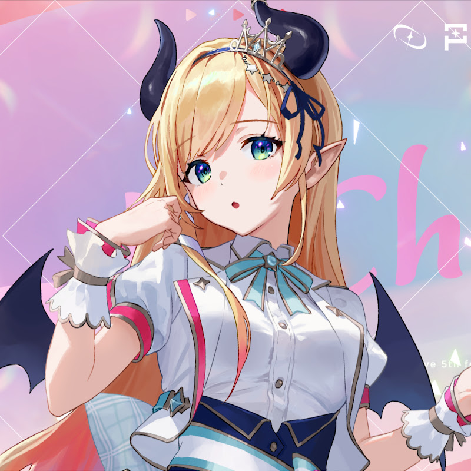
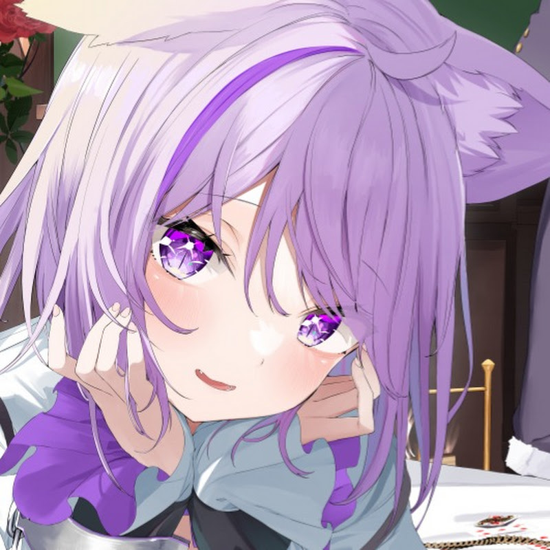
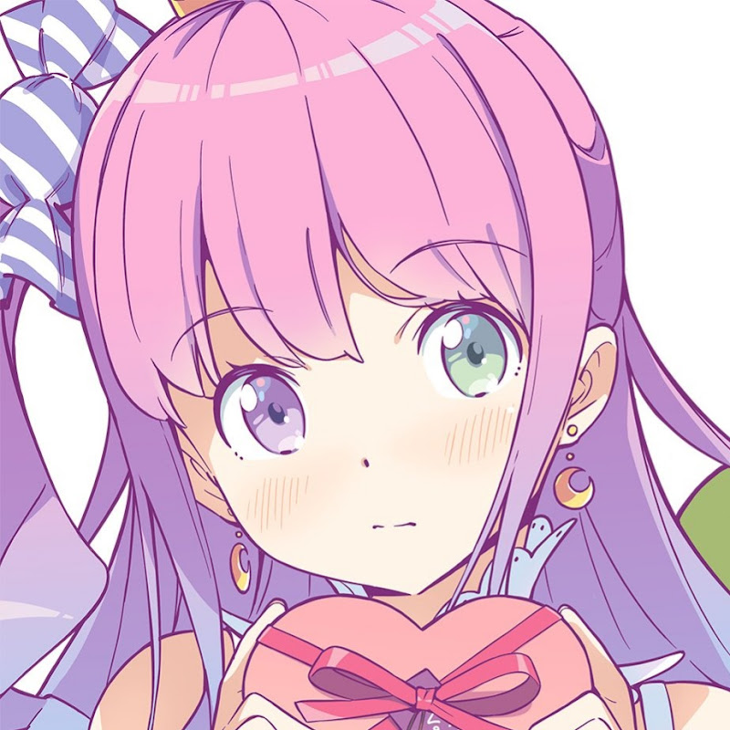
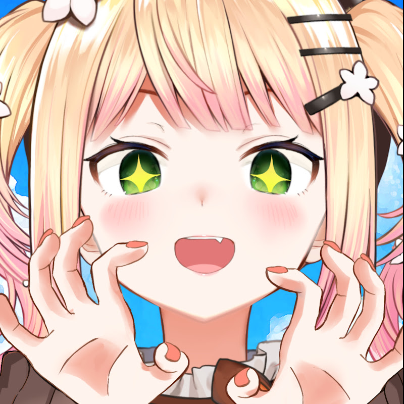

Vtuber歌枠まとめ
好きなVtuberや歌で歌枠動画を見つけよう！
Vtuberから探す
歌から探す
ときノそら
ロボ子さん
アキ・ローゼンタール
赤井はあと
白上フブキ
夏色まつり
紫咲シオン
百鬼あやめ

癒月ちょこ
大空スバル
大神ミオ
さくらみこ

猫又おかゆ
戌神ころね
星街すいせい
兎田ぺこら
不知火フレア
白銀ノエル
宝鐘マリン
天音かなた
角巻わため
常闇トワ

姫森ルーナ
雪花ラミィ

桃鈴ねね
獅白ぼたん
尾丸ポルカ
ラプラス・ダークネス
鷹嶺ルイ
博衣こより
沙花叉クロヱ
風真いろは
曲名 1
曲名 2
曲名 3
曲名 4
広告枠 (728x90)